침몽도시
루시드 다이버
LUCID DIVERS
꿈에 침식된 도시에서 다이버의 기억을 회수하고,
그들이 괴이로 변질되기 전에 현실로 되돌리는
서브컬처 PvE 익스트랙션 액션 RPG
다이버는 잊는다.
관제사는 기록한다.
그리고 다시, 구하러 들어간다.
Project Overview
프로젝트 개요
Team REMnants가 제작 중인 Unity 기반 프로토타입 프로젝트. PvE 익스트랙션 장르와 서브컬처 캐릭터 서사가 결합된 액션 RPG의 핵심 루프를 검증한다.
| 프로젝트명 | 침몽도시: 루시드 다이버 |
|---|---|
| 영문명 | Lucid Divers |
| 팀명 | Team REMnants |
| 장르 | 서브컬처 PvE 익스트랙션 액션 RPG |
| 시점 | 2.5D 탑다운 액션 |
| 엔진 | Unity |
| 플랫폼 | PC 프로토타입 |
| 목표 | P0 버티컬 슬라이스 프로토타입 |
| 핵심 검증 | 익스트랙션 보상이 캐릭터 구원 보상으로 전환되는가 |
| 메인 다이버 | 채린 (P0 단독 플레이어블) |
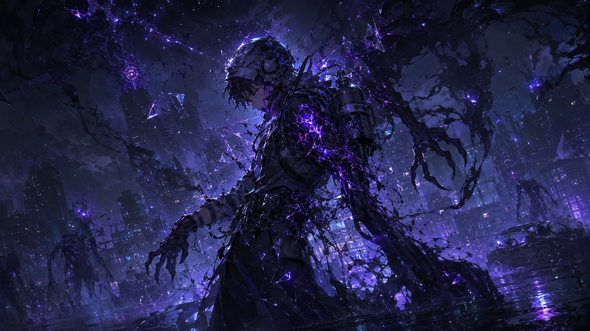
메인 다이버 1명을 중심으로 'PvE 익스트랙션 루프'와 '서브컬처 캐릭터 애착 루프'가 실질적으로 결합될 수 있음을 증명하는 포트폴리오용 버티컬 슬라이스입니다.
Core Pitch
핵심 피치
세 가지 핵심 경험이 하나의 세션 안에서 유기적으로 연결된다.
PvE 익스트랙션
위험 구역에 진입해 전투와 탐색을 수행하고, 탈출에 성공하면 보상을 보존한다.
실패하면 세션에서 획득한 모든 것을 잃는다.
성공/실패의 긴장감이 모든 판단을 의미 있게 만든다.
캐릭터 구원 서사
다이버는 침몽도시에서 기억과 자아를 잃어간다.
플레이어는 기억 파편을 회수해 다이버가 괴이로 변질되는 것을 막는다.
파밍의 목적이 '강해지기'가 아닌 '사람을 구하기'다.
기억 회수형 애착 보상
기억 파편은 단순한 재화가 아니다.
동조율 상승, 개인 심상 기록 해금, 귀환 대사 변화로 이어지는 감정 보상이다.
플레이어는 다이버를 구할수록 더 깊이 연결된다.
World Setting
침몽도시란 무엇인가
실패한 귀환, 잃어버린 기억, 반복된 죽음으로 구성된 꿈의 재난 구역
꿈의 침식
현실과 꿈이 겹쳐진 도시 구역. 현실의 무기는 침몽도시의 괴이에게 통하지 않는다. 오직 꿈의 무장, 심상무장만이 길을 열 수 있다.
반복과 유실
탈출 실패 시 강제 각성, 반복 실패 시 기억과 자아 손상. 구조받지 못한 다이버는 끝내 괴이로 변질된다.
귀환 신호
침몽도시에서 발신되는 귀환 신호만이 다이버의 위치를 알린다. 관제사만이 이 신호를 포착하고 연결을 유지할 수 있다.
Player Role
관제사는 누구인가
REMnants 소속 링크 관제사 · 귀환 신호를 붙잡는 사람
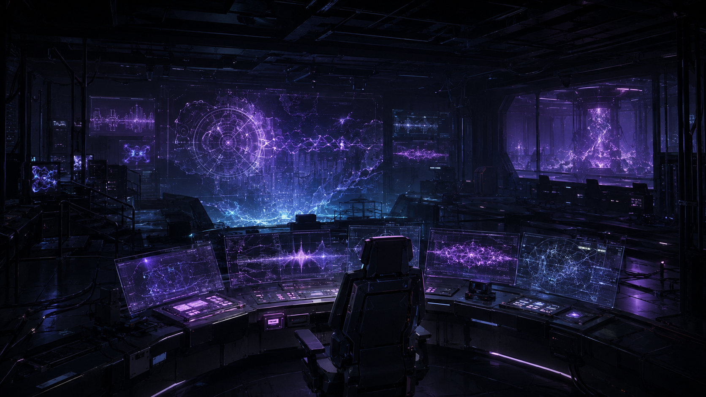
침몽도시는 기억을 삼킨다.
관제 로그만 남는다.
관제사는 다시 들어간다.
Diver
다이버란 무엇인가
침몽도시와 공명하여 심상무장을 사용할 수 있는 생존자. 동시에 가장 큰 위험에 처한 사람들.
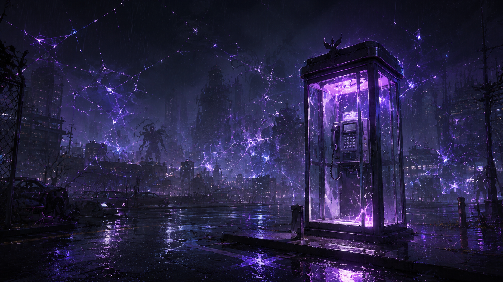
왜 다이버를 모집해야 하는가
모집은 '강한 캐릭터를 얻는 행위'가 아니라 '아직 완전히 삼켜지지 않은 사람에게 링크를 거는 행위'다.
심상무장 사용자
꿈의 에너지와 공명하는 적합자만이 사용할 수 있는 무장. 이는 축복이 아니라, 이미 침몽도시와 깊이 연결되어 있다는 의미다.
기억 소실 위험군
반복 실패 시 기억이 침몽도시에 흡수되어 자아가 무너진다. 구조 시한이 지나면 다이버는 다시는 인간으로 돌아올 수 없다.
괴이 변질
구조받지 못한 다이버는 기억과 자아를 잃고, 침몽도시 안에서 플레이어를 위협하는 괴이로 변질된다.
| 구분 | 일반 수집형 게임 | 루시드 다이버 |
|---|---|---|
| 캐릭터 획득 | 캐릭터를 획득한다 | 귀환 신호를 발견한다 |
| 강화 목적 | 전투력을 강화한다 | 자아 붕괴를 막는다 |
| 관계 발전 | 호감도를 올린다 | 잃어버린 기억을 복구한다 |
| 스토리 진행 | 스토리를 해금한다 | 구원의 과정을 확인한다 |
Main Diver · P0
채린
최초로 불완전 귀환에 성공한 다이버 · P0 메인 다이버
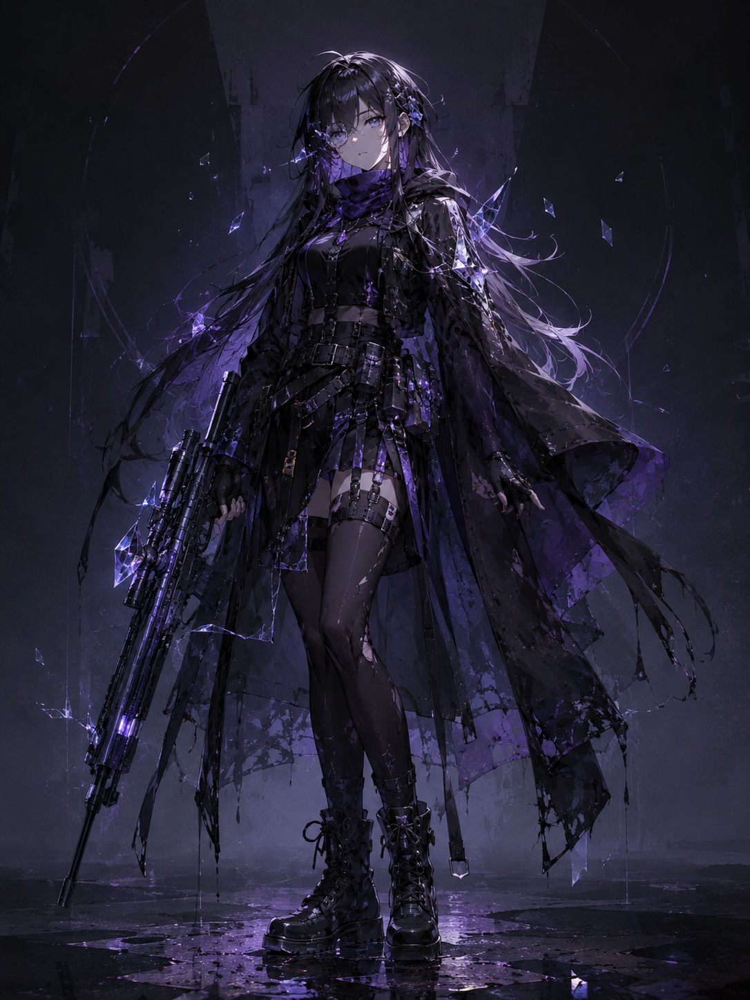
채린
최초로 불완전 귀환에 성공한 다이버
하지만 관제사는 채린의 실패와 귀환을 모두 기억한다.
기억하지 못하는 사람과 기록을 놓지 못하는 사람의 관계.
채린의 감정 변화
| 상태 | 채린의 반응 |
|---|---|
| 최초 링크 | "너를 믿으라고? 내가 기억도 못 하는 사람을?" |
| 기억 파편 회수 | "이 조각… 왜 이렇게 익숙하지?" |
| 동조율 상승 | "네 목소리, 처음 듣는 게 아닌 것 같아." |
| 기록 해금 | "기억났어. 너, 그때도 거기 있었지." |
Genre Explained
익스트랙션 장르란 무엇인가
위험 구역에 진입해 자원을 회수하고, 탈출에 성공하면 보존하며 실패하면 잃는 구조. 처음 접하는 사람도 이해할 수 있게 설명한다.
일반 익스트랙션 구조
다음 출격 준비
처음부터
Lucid Diver Variation
루시드 다이버식 변형
하나는 캐릭터를 구하고, 하나는 다음 출격을 준비한다.
| 구분 | 일반 익스트랙션 | 루시드 다이버 |
|---|---|---|
| 회수 목표 | 아이템 회수 | 기억 회수 |
| 강화 | 장비 강화 | 캐릭터 회복 |
| 실패 시 | 재화 유실 | 기억 유실 (서사적 손실) |
| 반복 이유 | 다음 출격 준비 | 다음 구원 시도 |
🔄 이중 보상 루프 구조
💜 서사 보상 루프
캐릭터를 구원하는 루프
🔵 자원 보상 루프
다음 출격을 준비하는 루프
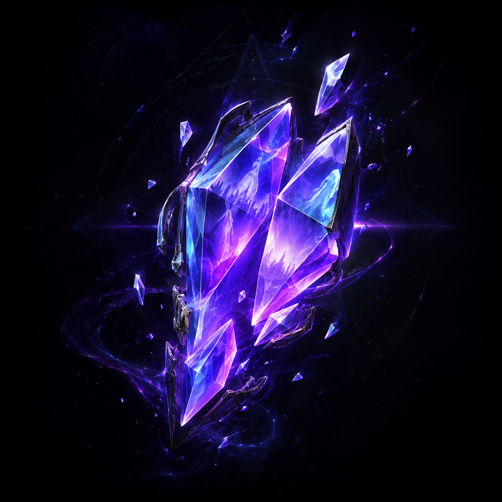
Full Game Flow
전체 게임 흐름도
로비에서 출격하고, 기억을 회수해 생환한 뒤, 관계와 자원이 누적된다.
로비
출격 준비
진입
파밍
회수
전화부스
회수품 → 창고 저장
기록 해금 (조건 충족 시)
회수품 → 전부 유실
기록 해금 없음
정산
대사 변화
확인
준비
Combat Flow · P0
전투 순서도
P0 전투는 복잡하지 않다. "타격 → 처치 → 드랍 → 회수"가 끊기지 않는 것이 우선이다.
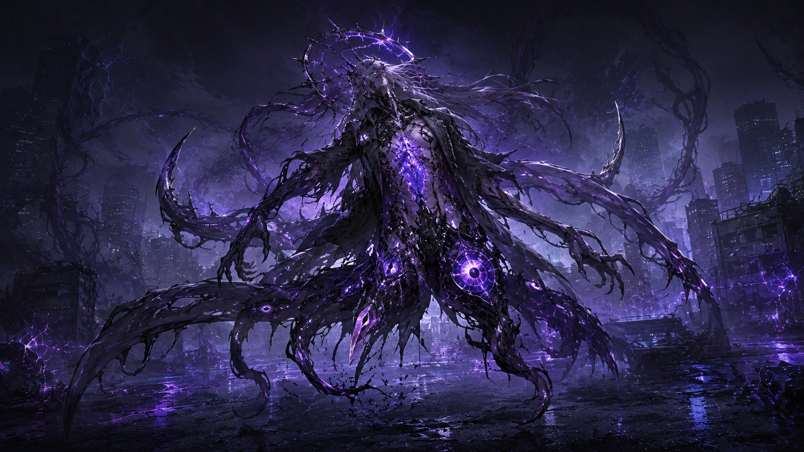
P0 Vertical Slice
P0 검증 목표
P0는 완성형 게임이 아니라, 핵심 루프가 실제로 연결되는지 검증하는 버티컬 슬라이스다.
익스트랙션 루프와 캐릭터 애착 루프가 서로 강화되는가?
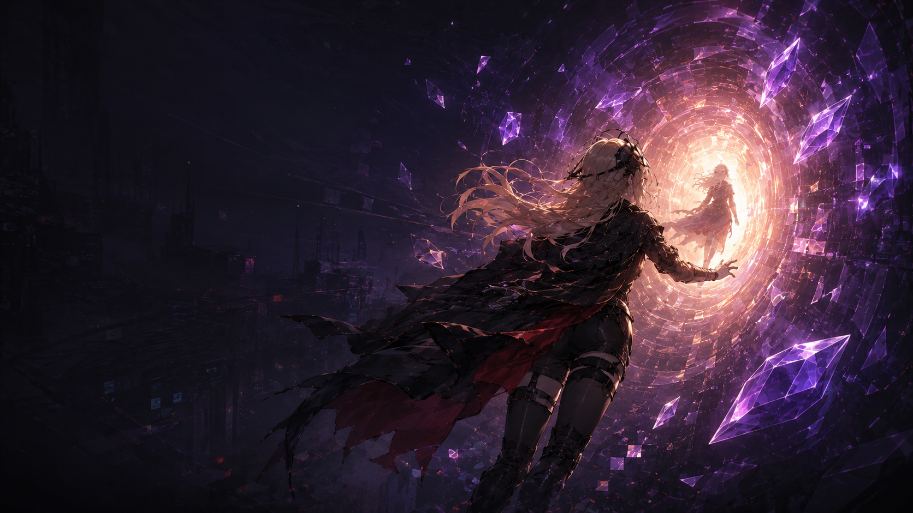
본 프로토타입은 서브컬처 + 익스트랙션 핵심 루프의 연계 가치를
명확히 검증하는 데 성공한 것으로 판단한다.
P0 Scope
P0-Core 구현 범위
채린 1명으로 "전투 → 회수 → 탈출 → 정산 → 기록 해금 → 로비 변화"가 연결되는지 확인한다.
Out of P0 Scope
P0에서 구현하지 않는 것
명확한 범위 통제. 루프와 구원 서사는 P0에서 대사, 기록, 결과창 문구로만 표현한다.
루프와 구원 서사는 P0에서 대사, 기록, 결과창 문구로만 표현한다.
Risk Control
리스크 통제 계획
P0에서 가장 큰 위험은 범위 확장과 일정 지연이다. 각 리스크에 대한 대응 방안을 사전에 정의하여 팀 내 혼선을 방지한다.
P0 범위 임의 확장
팀원이 P0 제외 항목을 구현 시도해 일정과 결합도에 영향을 줄 수 있다.
SSOT 기준 문서(P0 정의서)를 팀 전체 최상위 판단 기준으로 고정. 신규 피처 요청 시 반드시 정의서 검토 후 결정.
UI 에셋 지연
UI 비주얼 리소스가 늦게 완성되면 기능 연결이 지연될 수 있다.
기능 구현과 비주얼 분리. 화이트박스 UI로 기능 완성 후 비주얼 에셋 교체. 에셋 없이도 플로우 검증이 가능한 구조 유지.
서사-게임 보상의 단절
익스트랙션 루프와 캐릭터 서사 루프가 플레이어에게 별개 경험처럼 느껴질 수 있다.
결과창에서 두 루프를 시각적으로 명확히 구분 표현. 기억 파편 → 동조율 변환을 결과창에서 직접 전달.
퍼블리셔 기대치 불일치
퍼블리셔가 완성형 게임을 기대하고 P0 버티컬 슬라이스를 평가할 수 있다.
PPT 제안서와 본 페이지에서 P0 목표를 명확히 정의. "이것은 루프 검증용 버티컬 슬라이스"임을 문서 전면에 명시.
Development Plan
개발 계획 (마일스톤)
P0 개발 스프린트 로드맵. 각 단계의 핵심 목표와 완료 기준을 명시한다.
| 주차 / 기간 | 핵심 목표 | 주요 산출물 | 완료 기준 |
|---|---|---|---|
| 1주차 ~6.21 |
P0 Core 1 인게임 핵심 기능 | 이동/조준/공격, 적 AI, 아이템 파밍, 전화부스 탈출 | 단일 맵에서 전투·획득·탈출 플로우 단절 없이 동작 |
| 2주차 6.22~6.28 |
전체 루프 연결 로비~인게임~결과창 | 로비 UI, 출격 준비, 결과창, 정산 로직 | 로비→세션→결과→로비 복귀 루프 오류 없이 완성 |
| 3주차 6.29~7.5 |
서사 보상 연결 동조율·기록·대사 | 동조율 시스템, 심상 기록 01 해금, 귀환 대사 변화 | 파편 회수 → 동조율 상승 → 기록 해금 루프 정상 동작 |
| 4주차 7.6~7.12 |
창고·출격 준비 자원 관리 루프 | 창고 UI, 소지품 슬롯, 다음 세션 연결 | 창고 보관 → 장착 → 다음 세션 사용 플로우 정상 |
| 5~6주차 7.13~7.26 |
QA 및 polish 에셋 통합 | QA 체크리스트 실행, 애니메이션·에셋 적용, 버그 수정 | P0 완료 체크리스트 전 항목 통과 |
| 7주차 7.27~7.28 |
최종 제출 데모 빌드 | 최종 빌드, 발표 자료, 포트폴리오 정리 | 데모 빌드 정상 실행, 발표 준비 완료 |
UI / Screen Guide
주요 화면 가이드
P0에서 구현되는 7개 주요 UI 화면. 이미지를 클릭하면 크게 볼 수 있다.
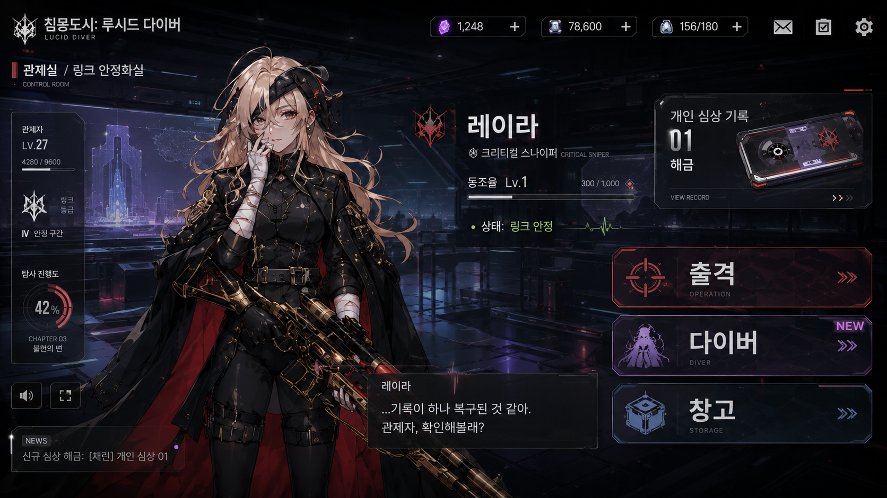
로비 / 관제실
출격 전후로 캐릭터 변화가 체감되는 허브. 관제사의 역할과 다이버의 관계 변화를 보여주는 공간.
- 다이버 초상화 / 현재 동조율
- 귀환 대사 텍스트 박스
- 출격 / 다이버 / 창고 메뉴 이동
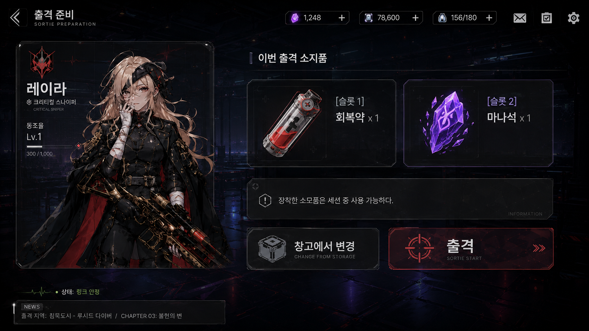
출격 준비
다음 세션에 가져갈 소비 기물을 선택하는 화면. 마나석/회복약은 단순 자원이 아니라 다음 구원 시도의 준비물.
- 소지품 슬롯 2칸 (마나석/회복약)
- 창고에서 변경 / 출격 버튼
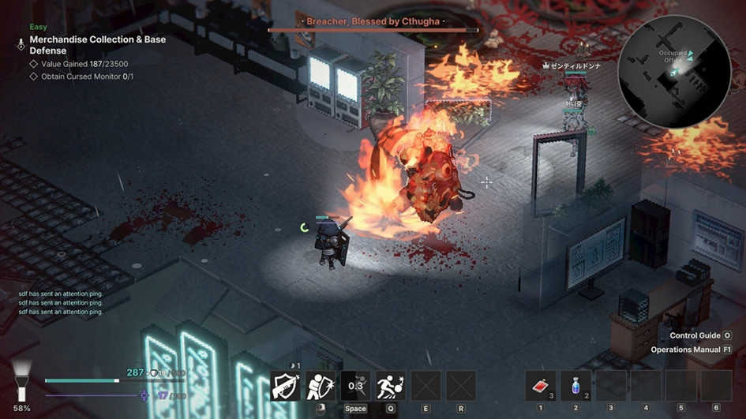
인게임 HUD
전투, 기억 파편 카운터, HP/Mana, 퀵슬롯을 통해 세션 중 위험과 회수 목표를 동시에 전달한다.
- HP / 마나 게이지
- 기억 파편 카운터
- 소지품 퀵슬롯
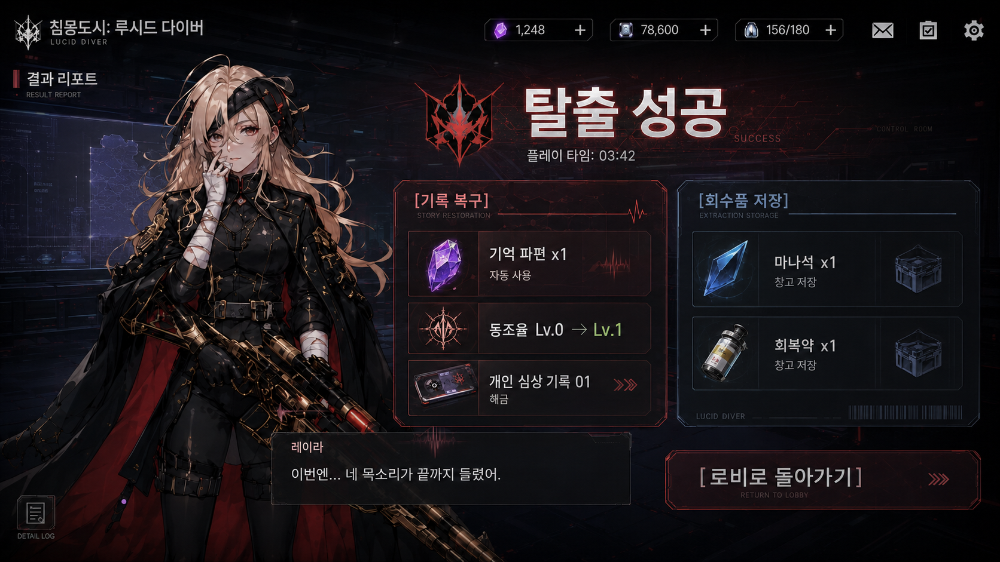
결과창: 탈출 성공
성공 탈출 시, 기억 파편은 자동으로 소모되어 동조율과 심상 기록으로 변환된다.
- 기억 파편 → 동조율 정산
- 심상 기록 해금 여부
- 마나석 / 회복약 창고 저장
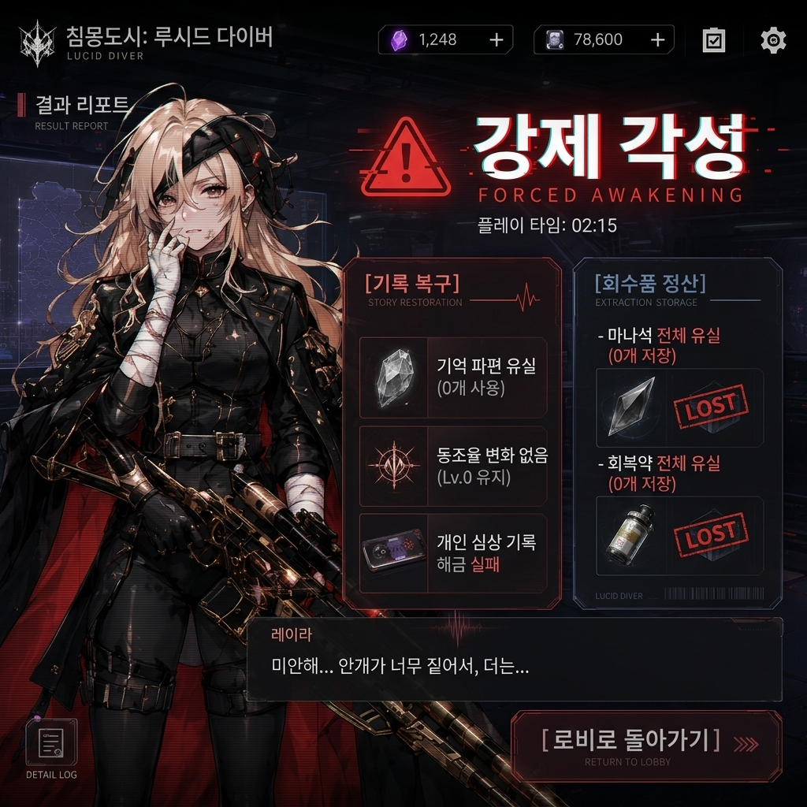
결과창: 강제 각성
강제 각성 시, 이번 세션에서 회수한 기억과 자원은 모두 침몽도시에 다시 가라앉는다.
- 전체 획득품 유실 정산
- 실패 대사 출력
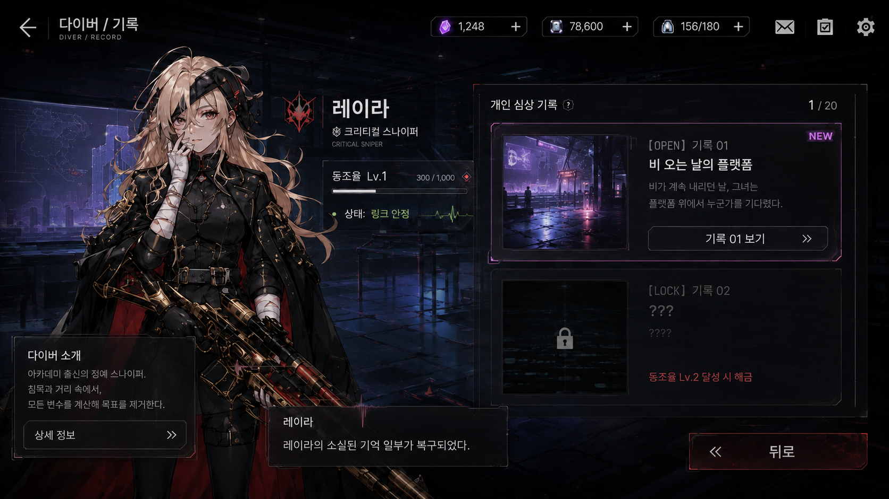
다이버 / 기록
동조율 상승으로 해금된 개인 심상 기록을 확인하는 화면. P0에서는 채린의 '끊어진 귀환 로그'만 구현.
- 기록 01 열람 (해금 시)
- 기록 02 더미 잠금
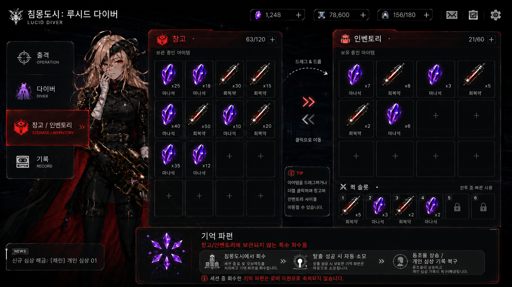
창고 / 인벤토리
탈출 성공으로 보존한 마나석/회복약을 확인하고, 다음 출격을 준비하는 화면.
- 마나석 / 회복약 보관 수량
- 소지품 슬롯 설정
Team Roles
팀 구성 및 담당 역할
Team REMnants 전원의 직군과 역할 분담. 이름을 클릭하면 세부 기여 항목을 펼쳐 볼 수 있다.
CP
장수영
Chief Producer · 본 포트폴리오 제작자
▾
P0 기획 총괄 및 범위 정의
- PvE 익스트랙션 × 서브컬처 애착 루프 결합 콘셉트 확립
- P0-Core / P0.5 / 제외 3단계 범위 구분 및 SSOT 정의서 작성
- 코치 피드백 내용 정리·팀 전파 및 스프린트 로드맵 2~7주차 확정
발표 자료 제작
- 퍼블리셔·코치 제출용 PPT 제안서 v1.1~v2.1 전 버전 제작
- 14개 섹션 기획서 (DOCX/PDF) 구성 및 UI 이미지 7종 삽입
- 흐름도·다이어그램 중심 재구조화, 코치 피드백 즉시 반영
문서 체계화 (SSOT)
- SSOT / 개발 전달용 / 기획 참고용 / 아카이브 폴더 체계 신설
- 문서 버전 관리 규칙 및 전 팀원 적용 가이드 작성
- 이미지 절대경로 → 상대경로 전환으로 렌더링 깨짐 해결
PM 업무 — 일정 관리
- 전체 팀 일정 회의 주도 및 스프린트 로드맵 합의 이끌어냄
- 비현실적 일정 문제 원인 분석 후 '기능 우선 / 에셋 분리' 방침 확정
- 매일 스크럼 일지 작성 및 팀 작업 상태 추적
HTML 포트폴리오 기획서 제작
- 침몽도시: 루시드 다이버 게임 소개 웹 페이지 설계 및 구현
- 17개 섹션, scroll-spy 내비게이션, 라이트박스, 반응형 레이아웃
- GitHub 문서 링크 연동 및 팀원 역할 아코디언 UI 제작 (본 페이지)
TD
강다영
Technical Director · 개발 총괄
▾
전투 시스템 구현
- 적 추적 · 공격 AI 및 플레이어 피격 로직 구현
- 무장 발사 시 마나 소비 / 초당 마나 자동 회복 시스템
- 적 추적 애니메이션 싱크 버그 분석 및 해결
인벤토리 / UI 시스템
- UIManager 타입 기반 일원화 리팩토링 (프리팹 구조 개선)
- 아이템 드래그 앤 드롭 · 더블클릭 창고-인벤토리 연동
- 퀵슬롯 UI · 소모품 아이템 사용 및 효과 적용 로직
서사 보상 루프 구현
- 기억 파편 회수 → 정산 소모 → 동조율 상승 로직
- 심상 기록 해금 조건 처리 및 1차 통합 빌드 검수
- 멀티플레이어 확장 대비 플레이어 ID 기반 상호작용 리팩토링
CD
우성혁
Creative Director · 시스템 기획
▾
P0 시스템 명세서 작성
- 핵심 플레이 루프 구현을 위한 P0 시스템 명세서 초안 및 완성본 작성
- P0에서 제외할 확장 명세(빈사 상태, 각성 보존 슬롯 등) 정리 및 제거
- extractionResult enum 타입 명시, 기억 파편 카운터 UI 추가 등 세부 명세 보완
세계관-시스템 정합성 관리
- 동조율 / 호감도 용어 통일 및 SSOT 문서 교차 동기화
- 퀵슬롯 장착 사양 · 결과 정산창 기억 파편 소모 규칙 명세 반영
- 시나리오·캐릭터·시스템 간 최종 결합 정합성 점검
서브컬처 서사 기획 보조
- 플레이어 서사 원동력("왜 다시 출격하는가?") 보강 방향 초안 정리
- 익스트랙션 × 서브컬처 호감도 보상 메리트 설계 참여
- 코치 피드백 기반 시스템 예외 처리(Edge Case) 누락 교차 점검
PM
송예찬
Project Manager · 시나리오 기획
▾
시나리오 / 캐릭터 기획
- 채린 캐릭터 심층 기획서 V1.14 작성 (대사 / 스킬 / 성격-능력 연계)
- 세계관 설정 기획서 V1.11 신규 작성 (침몽도시 탄생, 다수 관제사 풀, 소대 편성)
- 메인 시나리오 · 프롤로그 기획서 V1.13 작성 (튜토리얼 10단계 대사 스크립트)
서브컬처 애착 시스템 기획
- 캐릭터 수집 · 해금 · 감상 루프 설계 및 기획서 문서화
- 동조 반응 / 몽흔 반응 / 관제자 전용 반응 용어 체계 정립
- 채린 사이드 스토리 4단계 시나리오 스크립트 초안 작성
문서 정합성 관리
- 전 기획서 줄바꿈(CRLF 혼용) 일괄 정리 및 45개 문서 최신화
- Notion 캘린더 스프린트 로드맵 정리 및 일정 관리 체계 수립
- 버전 관리 · 문서 작성 템플릿 규칙 공식 가이드화
PD
김남해
Project Director · 레벨 디자인 / 에셋
▾
레벨 디자인
- 침몽도시(루시드 월드 / 심연 공간) 인게임 맵 화이트박싱 설계
- 맵 기초 레이아웃 및 공간 배치 레벨 디자인 제작
- 씬 배치용 에셋 패키징 및 테스트 씬 구성
에셋 리서치 및 발굴
- 환경 / 텍스처 / 프롭 / SFX / VFX 에셋 후보군 발굴 및 리스트업
- 로우폴리 3D 에셋의 픽셀아트 스타일 Shader 기법 연구
- 에셋 구매 요청서 고도화 — 무료 에셋 배제 기술·아트 사유 명문화
문서 정합성 검수
- 시나리오-시스템 기획서-레벨 디자인 간 설정·용어 최종 교차 검증
- 리소스 발주 명세와 P0 시스템 명세 정합성 확인
- 성우 녹음 대본 검수 일정 조율 및 내부 공유
Documents & Downloads
문서 다운로드
팀 내부 기준 문서와 발표 자료 링크. 파일이 없는 항목은 준비 중으로 표시한다.
Feedback Request
피드백 요청 사항
코치 / 퍼블리셔에게 받고 싶은 피드백을 명확히 제시한다.
플레이어가 다이버를 구해야 하는 서사적 동기가 설득력 있는가? '착해서 구하는 것이 아니라, 외면할 수 없어서 구한다'는 감정이 전달되는가?
익스트랙션 구조가 처음 보는 사람도 이해할 수 있게 설명되었는가? '가지고 나와야 보존된다'는 핵심 긴장감이 납득되는가?
기억 파편 → 동조율 → 구원 루프가 보상으로서 매력적인가? 서브컬처 캐릭터를 좋아하는 유저에게 반복 출격의 이유가 될 수 있는가?
P0에서 보여줄 범위가 적절한가? 너무 좁아서 가능성이 안 보이거나, 너무 넓어서 신뢰가 깨지는 부분이 있는가?
퍼블리셔 관점에서 더 보고 싶은 정보는 무엇인가? 리스크 통제, 팀 구성, 마일스톤 중 어느 부분을 더 보강해야 하는가?
트레일러에서 가장 먼저 보여줘야 할 장면은 무엇인가? 침몽도시 비주얼, 채린 서사, 익스트랙션 액션 중 무엇이 가장 강한 첫인상을 만드는가?